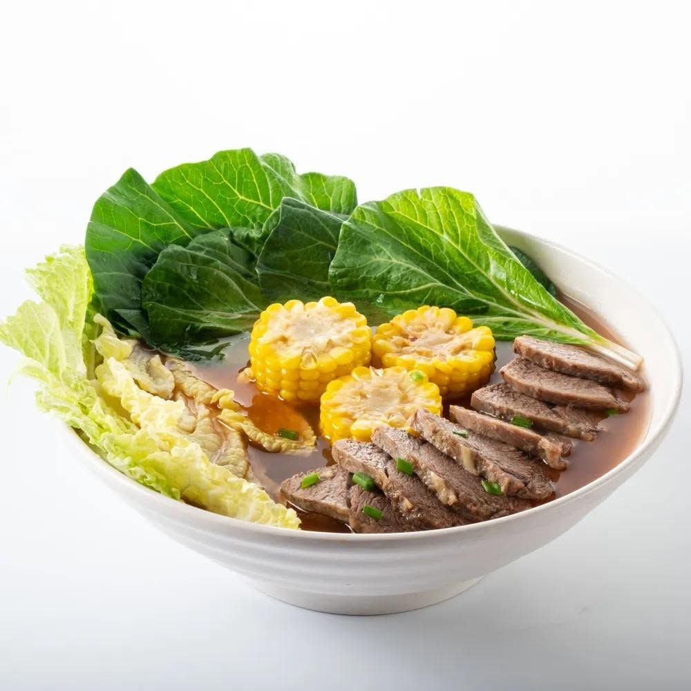

Recipes in memory
In Filipino households, dishes are passed down through hands, stories, and everyday rituals rather than recipe cards alone.
More than a meal

In Filipino households, dishes are passed down through hands, stories, and everyday rituals rather than recipe cards alone.

From birthdays to town fiestas, food brings together relatives, neighbors, and memory-rich traditions that feel bigger than any one plate.

Every flavor tells a story about migration, exchange, and the generosity of Filipino hospitality—meant to be shared and savored together.